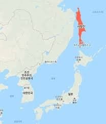
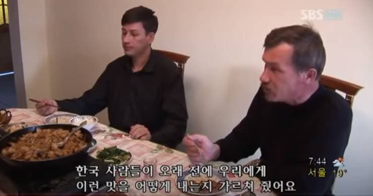
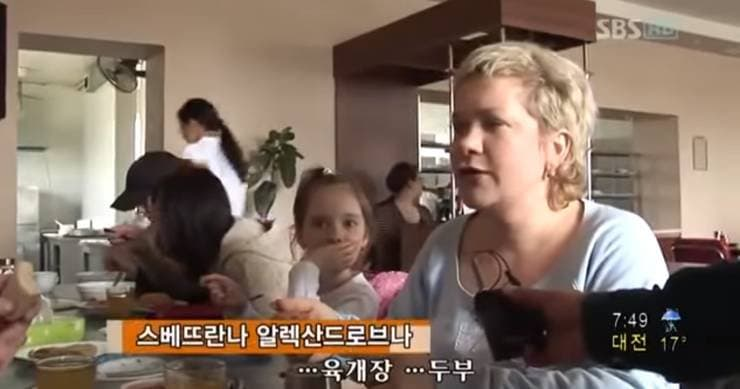
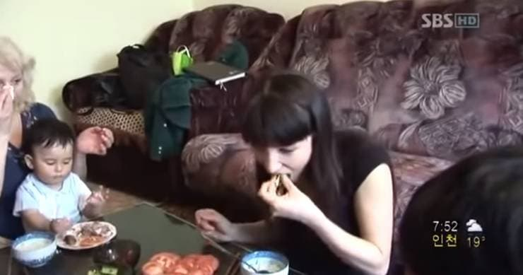
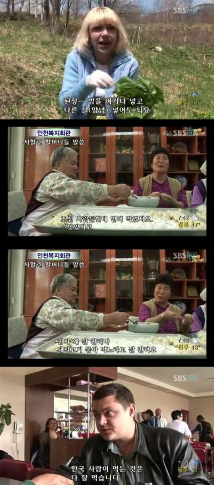

일제시대 때 조선인들이 러시아의 사할린
(홋카이도 위쪽에 있는 위아래로 길쭉한 큰섬)
으로 좀 이주 했음. 그때는 사할린 남부는
일본 영토였기 때문.
2차대전 종료 후에는 모조리 러시아에 반환.
이후에도 조선에 돌아오지 않고 정착한 경우가 많았는데
사할린이 뭐 농사 되는 땅도 아니고 졸라 척박해서
현지 러시아인들은 굶을 때가 제법 많았는데
이주한 조선인들은 맨날 뭘 실컷 쳐먹음.
조선인들 입장에서는 뒷산 가면 나물도 많고
바닷가 가면 조개랑 낙지 같은게 널려있어서 개꿀인데
러시아인들이 굶는게 이해 안간거임
러시아인들도 '엥 저게 먹는 거였어?' 하다가
나중엔 굶는거 보단 나으니 따라 먹기 시작해서
식문화가 바뀜.
현재 사할린에 가보면 동네 뒷산에서 고사리를 채집하는
러시아 처녀들이 널렸음.

이 사람들 젓가락 쓰고 있음ㅋㅋㅋ




댓글
수집 당시 댓글 95개
ㅇㅇ · 11.02 21:27:21
· ㅇㅇ · 11.02 21:28:47
· ㅇㅇ · 11.02 22:05:02
· ㅇㅇ · 11.02 22:05:51
· 독고준 · 11.02 22:22:58
· ㅇㅇ · 11.04 09:32:11
· 00 · 11.04 09:48:27
· ㅇㅇ · 11.04 12:36:05
과테스트 · 11.02 21:28:52
· 00 · 11.04 09:49:13
ㅇㅇ · 11.02 21:30:27
ㅇㅇ · 11.02 21:31:34
· ㅇㅇ · 11.02 21:47:51
· ㅇㅇ · 11.02 22:20:20
· ㅇㅇ · 11.04 09:38:47
· ㅇㅇ · 11.04 09:47:51
· 00 · 11.04 09:52:09
· ㅇㅇ · 11.04 10:08:56
· 나쁜말안돼 · 11.04 12:26:07
· ㅇㅇ · 11.05 11:13:28
ㅇㅇ · 11.02 21:33:54
ㅇㅇ(220.88) · 11.02 21:46:54
착한병 · 11.02 21:47:40
· ㅇㅇ · 11.02 22:14:43
· ㅇㅇ · 11.02 22:16:55
· 착한병 · 11.02 22:17:51
· ㅇㅇ · 11.02 22:19:35
· ㅇㅇ · 11.02 22:23:26
· ㅇㅇ · 11.02 22:34:35
· ㅇㅇ · 11.04 10:42:50
· ㅇㅇㅇ · 11.04 11:05:16
· ㅇㅇ · 11.04 18:51:39
WakandaHanzo · 11.02 21:51:19
ㅇㅇ · 11.02 22:00:04
ㅇㅇ · 11.02 22:01:06
· ㅇㅇ · 11.04 16:57:03
야관문MKll · 11.02 22:15:41
ㅇㅇ · 11.02 22:20:04
· ㅇㅇ · 11.04 09:43:19
· ㅇㅇ · 11.04 09:48:37
· 00 · 11.04 09:55:48
ㅇㅇ · 11.02 23:24:48
· ㅇㅇ · 11.03 00:15:00
땨뗘(봇) · 11.04 09:30:08
· ㅇㅇ · 11.04 09:41:55
ㅇㅇ · 11.04 09:32:05
· ㅇㅇ · 11.04 09:33:34
· 00 · 11.04 10:09:17
ㅇㅇ · 11.04 09:32:32
씹덕1005일차 · 11.04 09:33:14
· ㅇㅇ · 11.04 09:34:48
· ㅇㅇ · 11.04 09:42:49
· ㅇㅇ · 11.04 09:43:12
· 00 · 11.04 09:58:35
ㅇㅇ · 11.04 09:37:02
ㅇㅇ · 11.04 09:39:03
ㅇㅇ · 11.04 09:39:23
· ㅇㅇ · 11.04 09:40:48
· ㅇㅇ · 11.04 09:48:31
키나루디안마기 · 11.04 09:40:40
· 00 · 11.04 10:00:04
· ㅇㅇ · 11.04 10:11:00
· ㅇㅇ · 11.04 10:11:01
· ㅇㅇ · 11.04 10:11:39
· ㅇㅇ · 11.04 10:23:38
ㅇㅇ · 11.04 09:44:58
ㅇㅇ · 11.04 09:45:55
ㅇㅇ · 11.04 09:51:19
· 00 · 11.04 10:00:53
ㅇㅇ · 11.04 10:00:32
· ㅇㅇ · 11.04 10:05:21
· ㅇㅇ · 11.04 10:45:12
ㅇㅇ · 11.04 10:07:26
JungNu · 11.04 10:09:38
1212 · 11.04 10:10:19
ㅇㅇ · 11.04 10:25:58
ㅇㅇ · 11.04 10:38:18
ㅇㅇ · 11.04 10:43:29
ㅇㅇ · 11.04 10:51:43
ㅇㅇ · 11.04 11:43:17
· ㅇㅇ · 11.04 11:43:28
클레이모어2026 · 11.04 13:34:19
미프 · 11.04 13:46:08
· ㅇㅇ · 11.05 11:34:42
원또 · 11.04 13:53:58
VWVWV · 11.04 14:47:20
ㅇㅇ · 11.04 14:53:59
· ㅇㅇ · 11.04 14:54:03
ㅇㅇ · 11.04 15:14:59
ㅇㅇ · 11.04 16:13:17
ㅇㅇ · 11.04 16:19:08
ㅇㅇ · 11.04 16:31:48
ㅇㅇㄴㄴ · 11.04 17:13:20
환란 전 교회 휴거 · 11.04 23:36:52
ㅇㅇ · 11.05 01:18:41